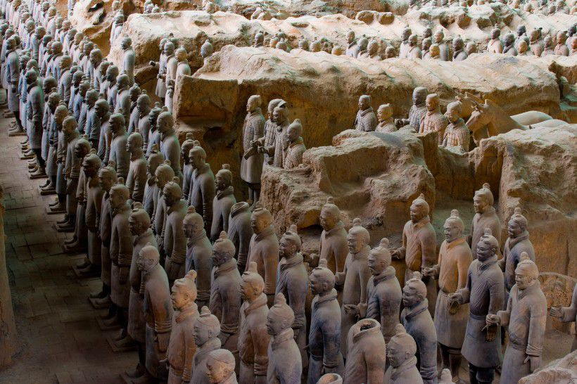

Culture
If we say that Beijing and Shanghai are the most modern and prosperous cities in China, then Xi 'an is the most historical city in China.
For those who want to know something about Chinese culture, here is the good place:Xianyang Confucian Temple. This place used to be used to commermorate Confucius, the most famous teacher and philosopher of the Spring and Autumn period of Chinese history. Now it exists a few collections which are beautiful.

The most important thing is that it is FREE OF CHARGE!